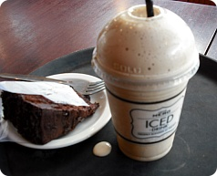
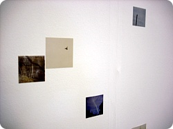
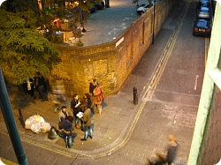
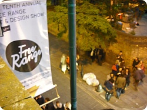
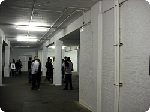
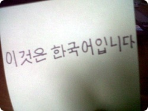
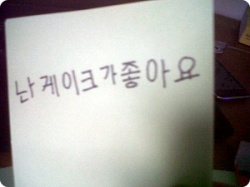

목요일 태어나서 처음으로 내돈주고 파마를했당;;;
머리자르러 갈때마다 머리잘라주시는분이 바뀌어도
항상 스트레이트 파마했냐구 물어보구;; 원래머리라구 하믄
머리가 너무 스트레이트라 볼륨펌하라는 소릴 들은지 꽤되어서;;
처음에는 아니 남들은 일부러 돈내고 스트레이트파마를 하는데
왜 난 머리가 스트레이트라서 볼륨펌을 하라는겨 ㅜㅜ
라믄서 꿋꿋히 버텼건만 이제 촘 한가해졌겠다
팔랑귀 팔락거리믄서 미용실댕겨왔음^^;;;
2008년도 잠깐 한국있었을때
당췌 뭐 꾸미거나 하는데는 관심없는 딸내미의 추레한 모습을 본 김여사는
내가 한국들어오자마자 요가클래스 / 메컵교실 / 자세교정해준다는 곳 기타등등
나를 여기저기 마구 보내셨지만 지금 내 꼴을 보면 그닥 효과는 없었던것 같다^^;;;;;
그때 엄마님께서 사람만들어 준다고 미용실끌구가서
굵은 웨이브넣는파마도 처음해봤는데
주변에서도 분위기가 훨 부드러워 보인다고하구
엄마님도 매우 만족하셨지만;; 자고로 헤어스타일이란건
매일아침 외출하기전에 세심하게 손질(??)을 해줘야 빛이나는법;;
머리감고 빗질도 잘 안하는 내가 본 파마후의 내모습은
갈기(..........;;)가 여기저기 뻗쳐서 그야말로 야성미가 넘쳤었음;;;OTL
파마하구 그날 런던서 옆방 T양 졸업전시회가 있어서
하우스메이트인 M언니 Y양을 만나서 전시회장으로 거거~
다들 나보고 어쩐일이냐믄서 깜짝놀랬다;;;;
이럴때마다 느끼는게;; 난 딱히 내가 '보이쉬' 나 '톰보이'를 지향하는건 아닌데
어쩌다 이미지가 이렇게 박힌거지???@_@
(그냥 키도있고 등치도있고 + 숏컷 + 시커먼옷만 주로입어서?? @_@)
이날 전시회장서 만난 친구들한테 돌아가믄서 한마디씩 들었음;;;
(주로 "엄훠~여성스러워졌어~이게 왠일이야??" 라는식의..;;;;)
사진전공하는 T양
일본 하이쿠를 모티브로 작업했다고 들은거 같은데;;(붕어기억력;;)


브릭레인 진짜 오랜만 +_+
런던와도 항상 옥스포드~피카딜리 이쪽만 왔다갔다하니까;;
(옥스포드는 사람많아서 싫다믄서 이상하게 꼭 들리게 됨;;)


금요일 토요일은 외국인 로동자
토욜날 알바시작하는 7:30부터 영국:미국 축구경기가있어서
알바가는길은 정말 어마무지했음
이게 같은과에도 정말 축구광이 한명있는데
(지 페이스북에 '왜 일년365일 축구를 할수없는거야~!!!'라고 쓸정도로 ㅡㅡ;;;)
온집에 잉글랜드 국기가 장식되고 심지어 지나다니는 자동차도 양쪽에 깃발휘날리믄서 다니고
거리엔 벌써 사람들이 드글드글
같이 알바하는 헝가리 아가씨랑
"우린 오늘 죽었어 ㅡㅡ;;; 시합끝나면 만약 얘들이기믄
다들 미쳐 날뛸거야 ㅡㅡ;; 어헝헝~"
이러고 있었는데 예상외로 무승부 ㅡㅡ;;;
난 당연히 이길줄 알았는데;; 어쩐일이래;;; 미국이 잘한거야 영국이 못한거야 ㅋㅋㅋㅋ
뭐 덕분에 라고 하기엔 뭐하지만 경기후에 다들 맥이빠져서 길거리에 사람도 별로 없었구
아르바이트도 무사종료^^;;;
그리고 나중에 C군이 보내온 문자 ㅋㅋ
Korea won against greece. England had a draw with america.
America are quite bad at football, so england must be very shit! lol
어쩌다 보니 나한테 일본어를 배우고있는 C군
한국사람한테 일본어를 배우는 영국인........이상해;;이상하다고 ㅋㅋㅋ
그래서 인터넷상에서 채팅하다보면 서로 영어가 늘고 일본어가 느는게아니라
요상한 신조어들만 생겨나고있따;;;;;;
나 처음에 영국와서 아무래도 같은 외국어이면
그때야 절대 일본어가 나한테 편하니까
가끔 영어막히고 패닉되고 그러믄 영어뒤에 일본어 です를 붙인다던가!!
again대신 また가 먼저 튀어나온다던가;; 이런 바보짓 진짜 많이했는데
(사....사실 지금도 가끔;; ☞☜)
C군 : today is so shizuka for me. so i feel sleepy you mo nemui?
나 : un watasimo chotto nemui. demo i had catnap :P
요런 대화가 오가고있다능;; 근데 서로 대화가 된다는게 더웃겨 ㅋㅋㅋㅋ
근데 아무래도 내가 한국사람이다보니까
한국어에도 관심이 가는모양 ㅋㅋ
오늘 자기가 처음 써본 한국어라믄서 사진찍어서 보내줬다


케키&카페 동지 C군 ㅋㅋㅋㅋㅋ
남자애답지않게(?) 케키좋아하고 카페서 둥개둥개하는거 좋아해서
카페동지 그림칭구 가 되었다능 ㅋㅋㅋㅋ
근데 저거 지금보니까 '케이크'가 아니라 '게이크' 같아 ㅋㅋㅋㅋㅋㅋ
지금 할수있는 한국어는
페궈퐈(배고파) 랑 sibal(이건 차마 한글로는;;;;...OTL)
진짜 어느나라 언어든 욕을 젤 빨리 배우는듯;;;
딴것도 많이 갈켜줬는데 기억하는건 저거 두개가 전부임 ㅡㅡ;;;
가끔 구글번역기 돌려서 괴상한 한국말을 한다던가
텍스트를 보내는데 이제 한국말까지 더해져서
점점더 괴이해져가는 문자내용들;;;
today watasi pegopa~ 이런식으로 ㅡㅡ;;;;; 오우노우;;
근데 진짜 영어로 한국말 설명하는거 넘 어렵다
특히 발음 ㅡㅡ;;
일본어야 발음이 어려운게 없고 영어스펠링으로 써놓으면
다 읽을수있는데 한국어 영어표기는 정말 한국사람만 읽을수있다능;;
울동네에 현대자동차 대리점이 있는데
친구들한테 다들 간판읽어보라고하믄 "횬다이~" "횬???ㄷ....??"
이런식;; (인터넷상에서 '샘숭' '횬다이' 난 이게 그냥
웃자고 하는소린줄 알았지 진짜 일줄은^^;;;)
다들 영문 내이름 보고도 뭐라 읽는지 모르고 ㅜㅜ
발음도 어렵고;;;;
잘먹겠습니다/감사합니다/안녕히가세요~
요런 간단한 인사말도 한국사람이 알아들을수준으로 발음할수있게
알려줄려면 꽤나 힘들다능;;(←니가 잘 못가르쳐서 그래;;;)
일본어는 arigatougozaimasita 라고 영어로 써놓으면
설령 '아뤼과토우고좌이마쉬타' 라고 읽을지언정 다들 이해는 하잖아 ㅜㅜ
한국어 설명하기 어려워요오오옹 ㅜㅜ